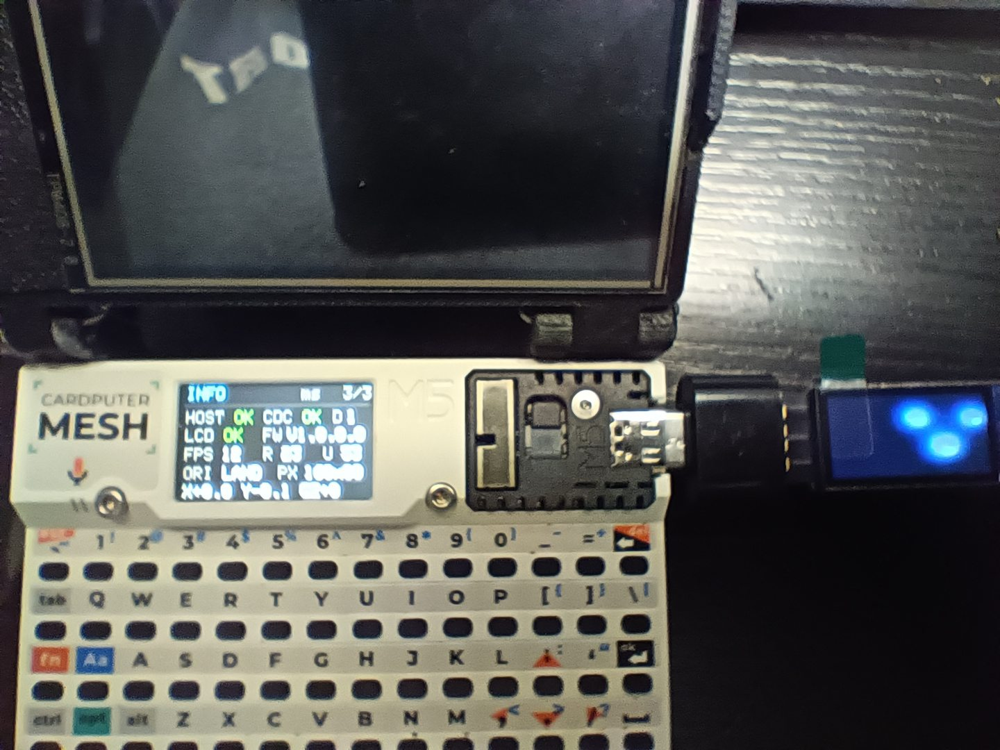
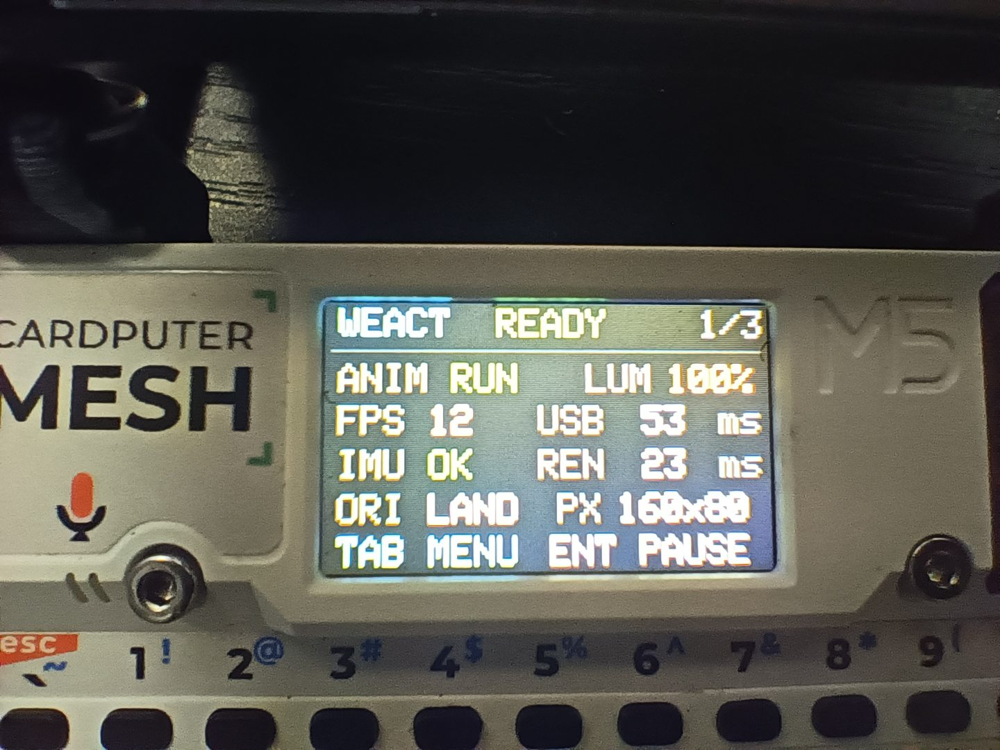
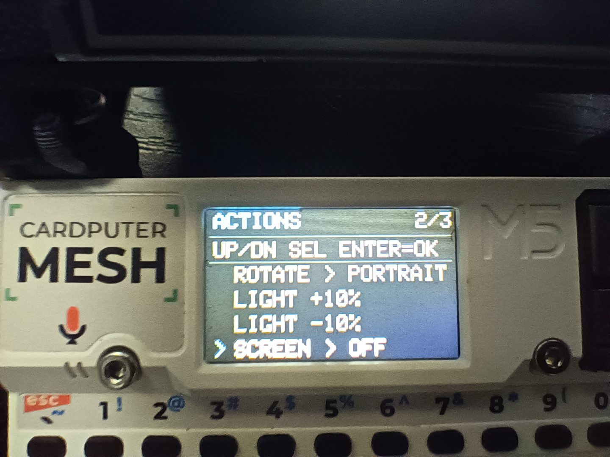
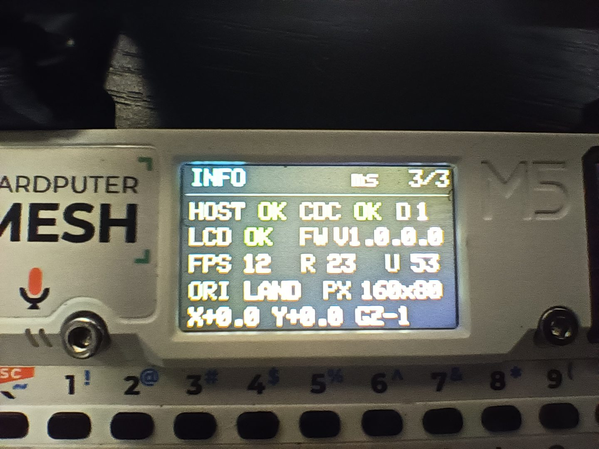

Build / Reuse
Use the display library.
Take the C++ driver into your own sketch. Orientation, brightness, screen power, pixel data and rectangular drawing are documented in the API.
Drive a 0.96-inch USB-C screen from the Cardputer ADV. Rotate it, dim it, draw in RGB565, and run a fluid animation that responds to motion.
160 × 80 pixels / USB CDC / Four orientations / Open source

Start with the part you need. The source, demo, and prebuilt image have separate entry points.
Build / Reuse
Take the C++ driver into your own sketch. Orientation, brightness, screen power, pixel data and rectangular drawing are documented in the API.
Explore / Modify
Study the dashboard, actions menu, motion response and four-way rotation. Build instructions are included for the Cardputer ADV.
Install / Flash
The release includes a complete 8 MiB image for the verified pairing. Flashing at 0x0 overwrites the Cardputer's entire flash, including settings. Read the procedure first.
The Cardputer's motion sensor and measured frame timings feed a fluid visual. Its shape, color and speed change as you move the device.
Tab changes pages. ↑ and ↓ adjust brightness or select actions. Enter pauses, resumes or runs a command.
Landscape, portrait, reverse landscape and reverse portrait. The animation keeps its proportions when the panel turns.
Animation changes are artistic effects, not a CPU-load meter. The microphone is unused.
Dashboard, Actions and Info are available on the Cardputer's built-in TFT.



This project has been exercised on one host and one external panel. Use these details to check your setup before building or flashing.
Compatibility detailsScope: Other Cardputer models, larger panels and other WeAct firmware revisions have not been validated.
Documentation and licenses stay in the repository, alongside the exact source and binary artifacts.
Open the repository